回合制 × 自走棋融合玩法 · 深度体验拆解 · 社区反馈与需求层次分析
结合深度游玩体验来看，"货币战争" 是《崩坏：星穹铁道》基于原有回合制战斗、融合自走棋玩法打造的 PVE 模式。其核心在于引入自走棋核心体系（包括 D 牌、升星、1-5 费卡牌、羁绊、事件、强化事件等），同时针对新玩法调整角色技能与机制，既适配玩法核心需求，又能满足偏爱大数字数值伤害、希望"牢"角色发挥价值的玩家诉求。
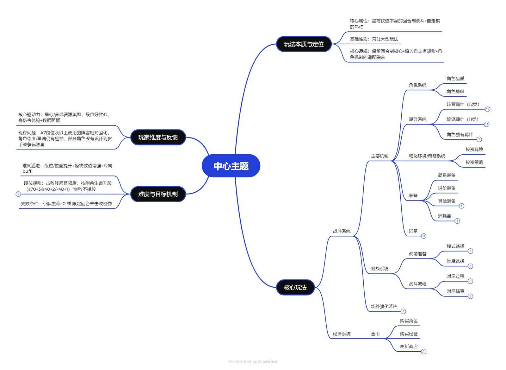
选择模式 → 确定投资环境 → 备战阶段（D 牌 / 升星 / 激活羁绊）→ 位面节点挑战（战斗 / 奖励 / 遭遇 / 补给）→ 击败位面首领 → 根据剩余生命升段 → 获取资源奖励 → 解锁场外优势 → 挑战更高段位 / 难度
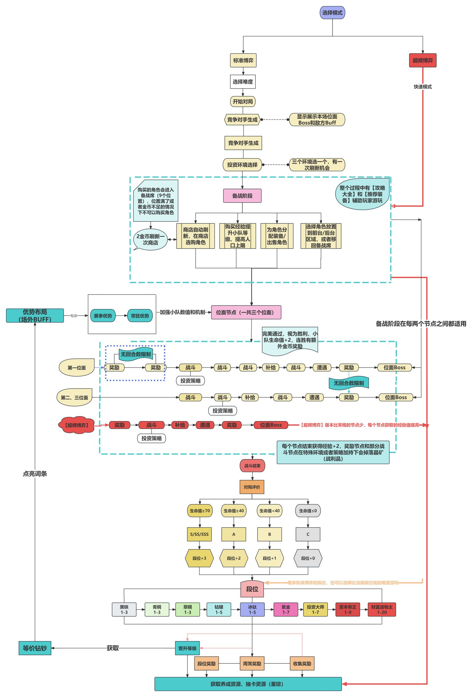
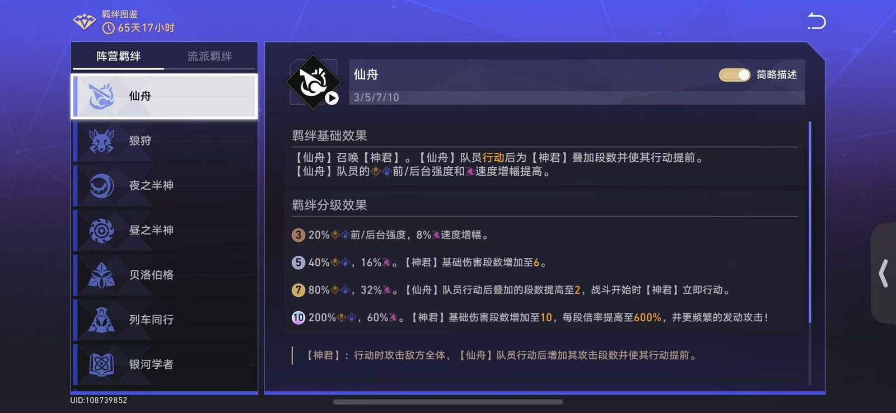
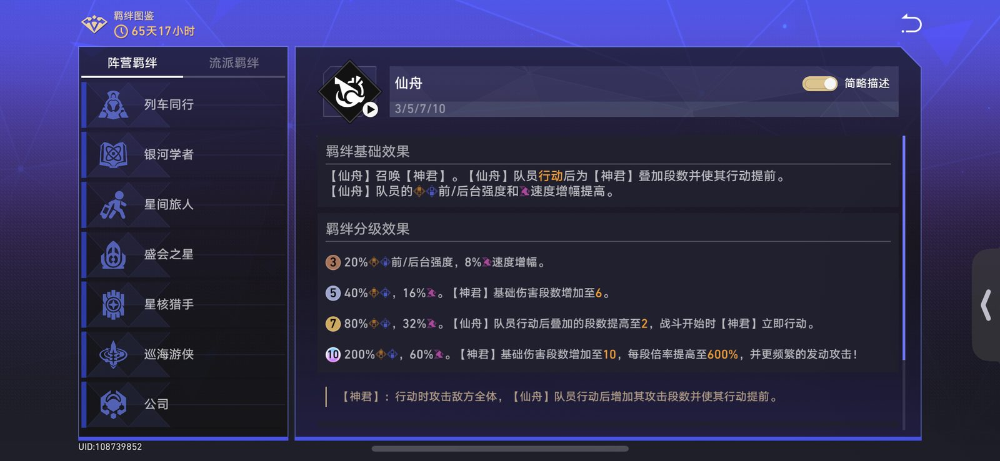
| 维度 | 分析 |
| 系统定位 | 玩法核心策略支撑，决定阵容强度上限与战斗风格。通过羁绊组合创造多样化阵容，兼顾新手易上手与老手深挖掘的需求 |
| 用户体验 | 高契合度羁绊组合能带来显著伤害提升，激活高等级羁绊时成就感强烈 |
| 优点 | 羁绊类型丰富、效果差异化明显，与角色特性匹配度高 |
| 缺点 | 高段位高难度阶段的公式化打法使用比较频繁，部分羁绊实用性低，缺乏平衡调整 |
| 改善意见 | 优化部分羁绊的强度（比如追击羁绊打法前中期难过渡），新增羁绊制衡机制，避免单一阵容垄断高段位 |
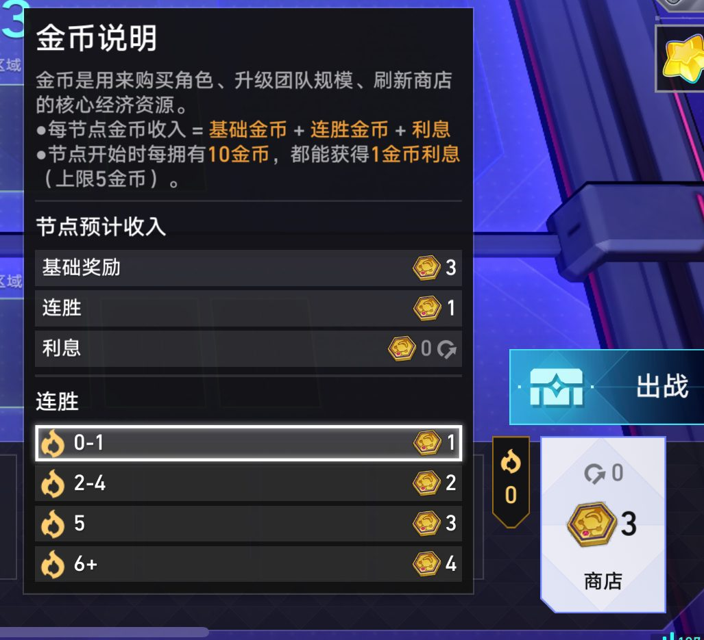
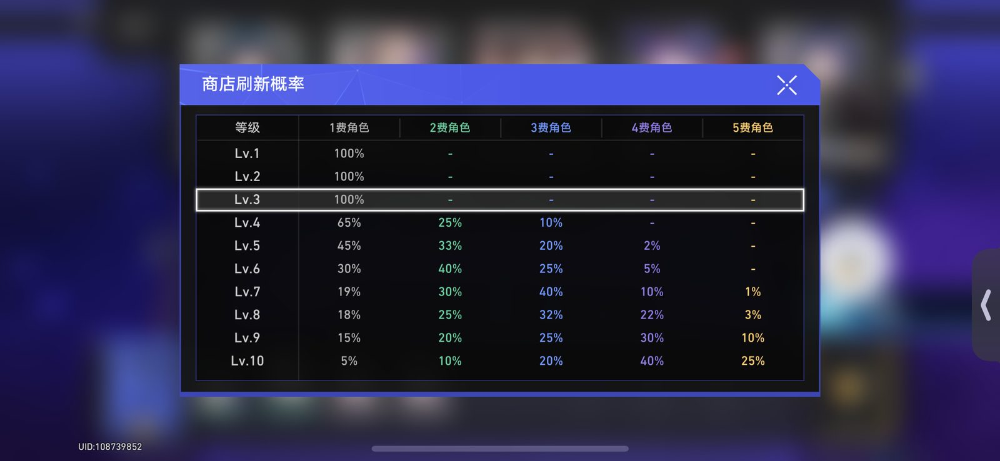
| 维度 | 分析 |
| 系统定位 | 阵容构建的资源基础，决定阵容成型速度与强度上限 |
| 设计目的 | 通过经济策略（存钱吃息 / 速升人口）增加玩法深度，让不同资源分配思路都能获得对应收益 |
| 用户体验 | 前中期段位经济节奏适中，新手可通过基础规则快速上手，老手可通过利息计算和商店博弈优化阵容；但前期金币紧张时容错率较低 |
| 优点 | 利息规则清晰，与自走棋经典机制接轨，学习成本低 |
| 缺点 | 前期经济压力较大，部分低费阵容成型后难以对抗高费阵容 |
| 改善意见 | 适当提高前期基础金币奖励，增加经济相关事件触发概率，平衡不同阵容成型节奏 |
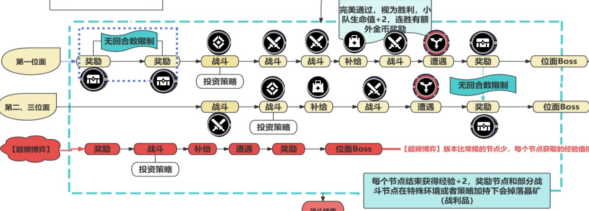
| 维度 | 分析 |
| 系统定位 | 玩法核心挑战载体，连接阵容构建与奖励反馈的关键环节 |
| 设计目的 | 通过梯度化难度设计，满足不同水平玩家的挑战需求，同时通过段位机制激发竞技动力 |
| 用户体验 | 位面节点类型丰富，补给节点的装备获取和遭遇节点的难度选择增加策略性；首领战数值压力适中，高剩余生命升段时反馈强烈 |
| 优点 | 节点设计多样，战斗节奏与回合制适配良好，段位晋升无惩罚机制友好 |
| 缺点 | 高段位怪物专属 BUFF 过强，部分节点难度波动较大 |
| 改善意见 | 优化高段位怪物 BUFF 数值，平衡不同节点的奖励与难度匹配度，或者给予玩家多一点的对策手段，避免难度陡增等问题 |
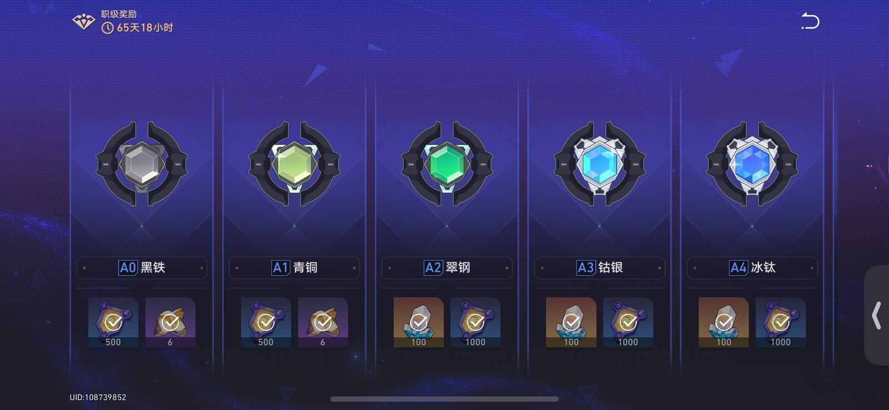
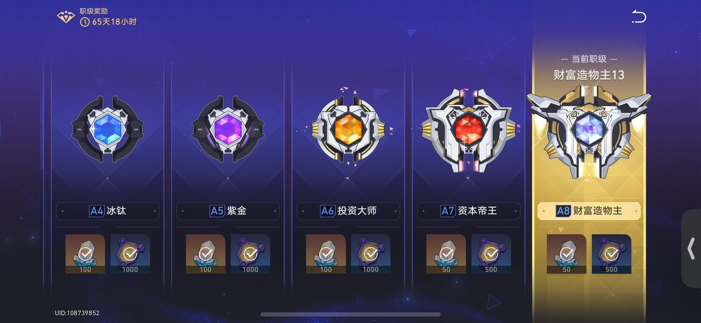
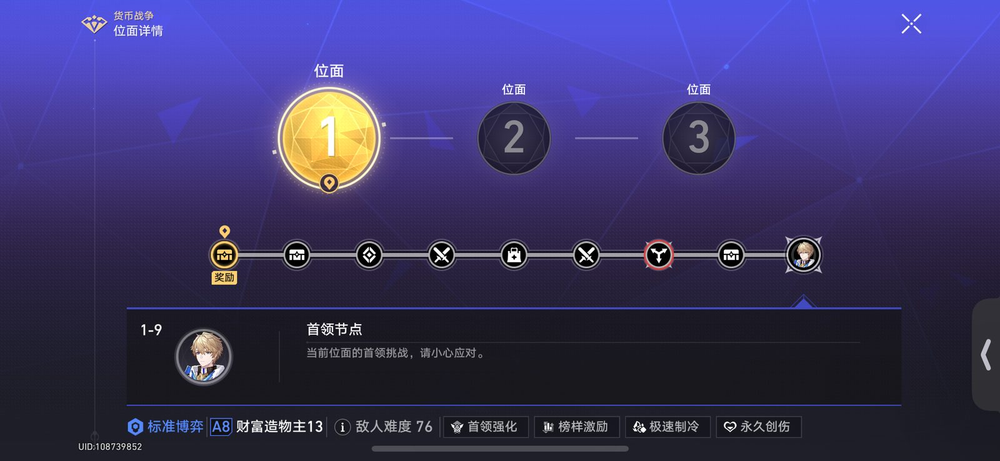
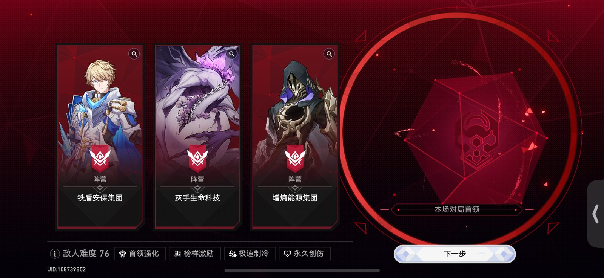
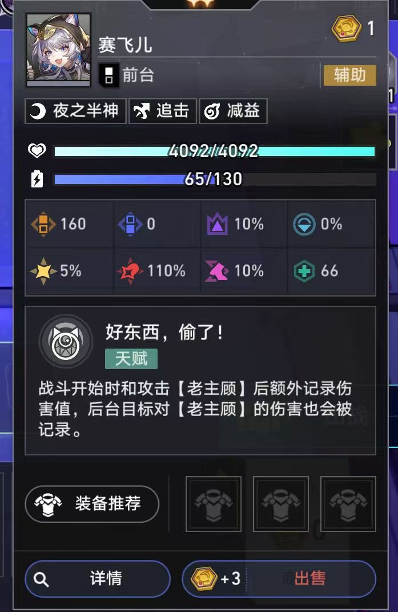
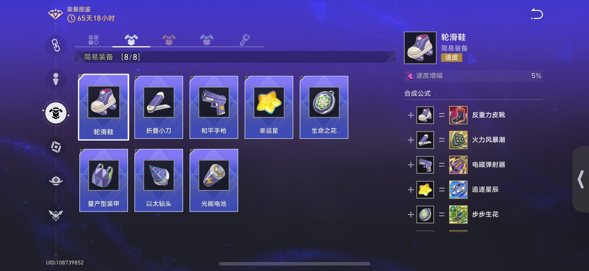
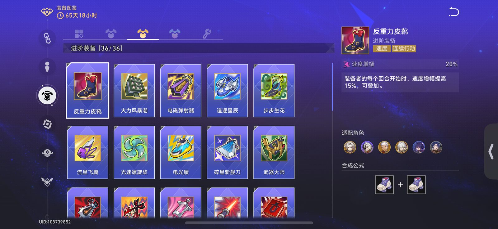
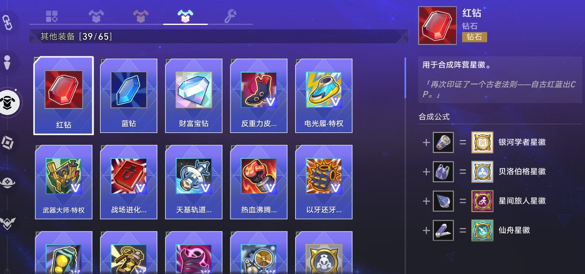
| 维度 | 分析 |
| 系统定位 | 阵容强度的重要补充，与羁绊系统形成协同效应 |
| 设计目的 | 通过装备搭配进一步细化阵容策略，提升玩法多样性 |
| 用户体验 | 装备合成逻辑清晰，稀有装备的羁绊徽章和人口加成能显著改变战局；但装备获取随机性较强，部分核心装备难获取 |
| 优点 | 装备与羁绊适配度高，稀有装备设计有亮点，提升策略深度 |
| 缺点 | 获取随机性大，核心装备稀缺导致阵容成型稳定性不足 |
| 改善意见 | 增加补给节点的装备选择范围，新增装备重铸的定向词缀功能，降低核心装备获取难度 |
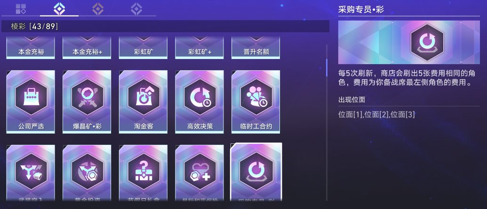
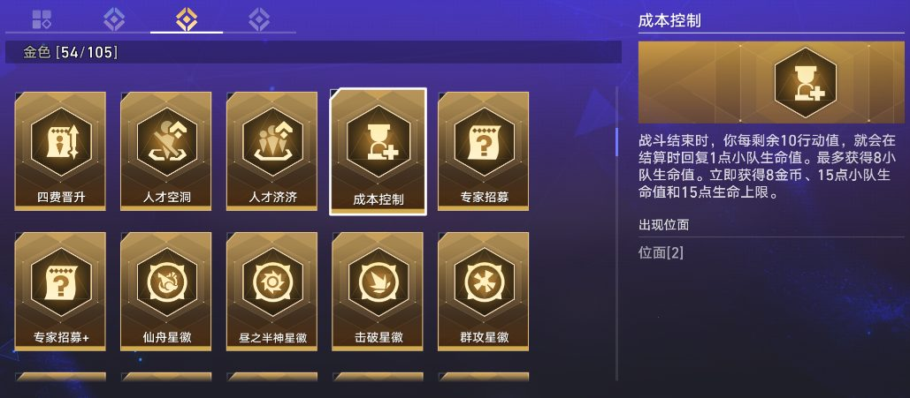
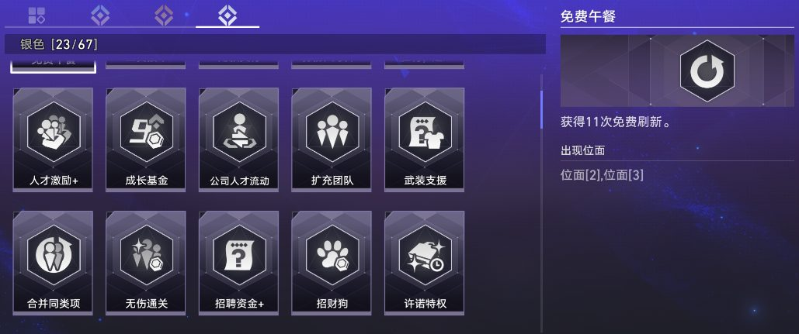
| 维度 | 分析 |
| 系统定位 | 单局玩法的策略变量，提升每局游戏的独特性与趣味性 |
| 设计目的 | 通过随机事件打破固定阵容套路，增加玩法 replay 价值 |
| 用户体验 | 棱彩品质事件能带来显著优势，事件选择过程中的策略权衡增加乐趣 |
| 优点 | 事件类型丰富，效果差异化明显，提升玩法随机性与策略性 |
| 改善意见 | 增强部分弱势事件的实用性 |
基于 2000 条 B 站评论数据，从数据有效性、情感倾向、用户关注焦点、用户画像四个维度展开分析。
B站是"货币战争"泛用户（轻度玩家、主线玩家）的情感体验与基础诉求聚集地，讨论以"情绪表达、成果展示、基础痛点吐槽"为主，内容碎片化、娱乐化，反馈覆盖从玩法入门到高难体验的全情绪场景，缺乏深度策略分析。
| 类别 | 内容 |
| 成功点 |
• "牢"角色大放异彩引发情感共鸣（"牢角色焕发光彩"收获正面反馈） • 自走棋+回合制的玩法新鲜感，吸引主线玩家尝试 • 奖励设置匹配泛用户预期（多数认为"星琼给的够用"） |
| 缺憾 |
• 基础体验短板明显（教程冗长、自动 AI 逻辑混乱、战斗无倍速） • 高难设计失衡（A8 怪物 debuff 过强、血量过厚，导致体验从"解压"变"增压"） • 阵容固化（泛用户只能依赖少数热门阵容，冷门角色无适配空间） |
| 改进期望 |
• 优化基础操作：开放教程跳过、战斗倍速、自动 AI 逻辑修复 • 调整高难平衡：削弱 A8 怪物的不合理 debuff、降低高段位怪物血量 • 拓展内容维度：新增未加入的 IP 角色、开放更高段位后的新玩法 |
NGA是"货币战争"核心玩家（硬核自走棋爱好者、数值党）的深度策略探索与机制咨询社区，讨论以"理性实证、策略拆解、机制适配"为主，内容聚焦化、实用化，反馈围绕"策略有效性、高难适配性"，缺乏基础体验类吐槽。
| 类别 | 内容 |
| 成功点 |
• 机制深度足够，提供了多元策略空间（如不同投资环境适配不同阵容） • 高难对局有探索价值，吸引核心玩家研究适配方案 • 角色羁绊与 IP 设定结合紧密、牢角色重新焕发光彩，玩家的情绪价值和对游戏 IP/角色的情感得以进一步延伸 |
| 缺憾 |
• 高难阵容固化（A8 以上段位仅少数 T0 阵容能通关，很难看到阵容使用百花齐放的情况） • 长周期玩法不足（高段位通关后缺乏新策略探索方向） • 部分底费角色强度不够，存在感低，多数情况下仅用来凑羁绊 |
| 改进期望 |
• 拓展策略维度：新增羁绊组合、开放低费角色的高星魂专属效果 • 优化信息展示：增加"羁绊预览""词条影响说明"功能 • 平衡高难环境：削弱强势阵容的克制词条、增加高段位的策略选择空间 |
结合两大平台的调研数据，"货币战争"玩法在社区内保持高讨论度与热度，这一现象印证了《星穹铁道》"回合制核心+自走棋机制"的融合设计具备可行性。从运营策略来看，该玩法作为常驻内容，搭配可获取的养成材料与道具，整体设计获得了多数玩家的认可——角色相关梗图、游玩趣事的广泛传播，也从侧面反映了玩家对该玩法的接受度与参与热情。
此外，玩家普遍满意的点还包括：玩法中对"大数字伤害"的呈现优化、部分角色原有痛点的修正，以及为特定角色定制的专属战斗动画/特效，这些设计精准契合了与角色有深度情感连接的玩家的心理需求。
结合马斯洛需求层次理论（生理需求 → 安全需求 → 归属与爱的需求 → 尊重需求 → 自我超越需求）解读"货币战争"玩法的玩家反馈逻辑。
马斯洛的"生理需求"对应游戏中玩家的核心生存与成长诉求，即通过低门槛参与获得实际收益。
"货币战争"作为常驻玩法，提供养成材料、道具等核心资源，让玩家无需高成本投入即可完成"资源积累"，满足了"付出即有回报"的基础预期；而"回合制+自走棋"的融合设计降低了入门门槛，即使是轻度玩家也能快速上手，避免了因玩法复杂度过高导致的"参与无门"，本质是对玩家"最低成本获取成长资源"这一需求的满足。
安全需求的核心是"对稳定、公平、可预测环境的渴望"，这一点在玩法设计中体现为两方面：
该需求聚焦"情感寄托"与"群体归属感"，玩法通过两大设计实现满足：
尊重需求分为"自我尊重"（对自身能力的认可）与"他人尊重"（获得他人认可），玩法在低-中难度环节充分满足了这一点：
高难度环节中，玩家的安全需求首先受到冲击：
高难度阶段（A8 及以上）对玩家策略深度的要求陡增，导致不同玩家的尊重需求均受到不同程度的冲击：
马斯洛的"自我超越需求"是指"突破自我极限、实现更高目标的渴望"，高难度玩法本应是满足这一需求的核心场景，但"货币战争"的设计存在明显失衡：
"货币战争"之所以能获得多数玩家认可，核心是精准匹配了"生理需求（资源获取）→归属与爱的需求（情感连接+社区认同）→尊重需求（基础成就感）"的低-中层需求；而高难度环节的负面反馈，本质是未能持续满足"安全需求（公平与可控）→尊重需求（深度成就感）→自我超越需求（合理挑战）"的中-高层需求。
从优化角度来看，若要改善高难度环节的玩家体验，需从需求满足角度切入：
"货币战争" 作为星穹铁道的常驻大型玩法，通过回合制与自走棋的创新融合，成功激活了角色价值并提供了深度策略体验，其完善的奖励体系与场外成长机制有效提升了玩家留存。
尽管在高段位平衡、角色覆盖等方面存在不足，但核心玩法框架成熟，适配 IP 调性与玩家需求。随着后续平衡调整与内容更新，有望成为星穹铁道的核心玩法支柱，进一步提升游戏整体活跃度与生命周期。